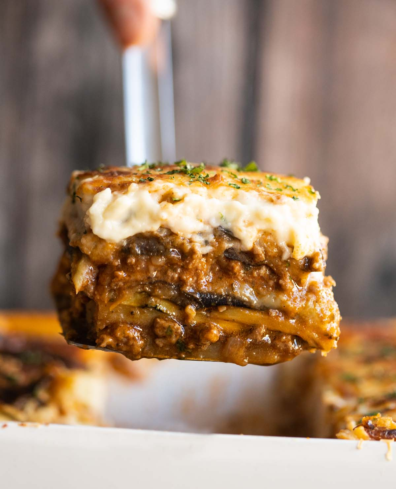
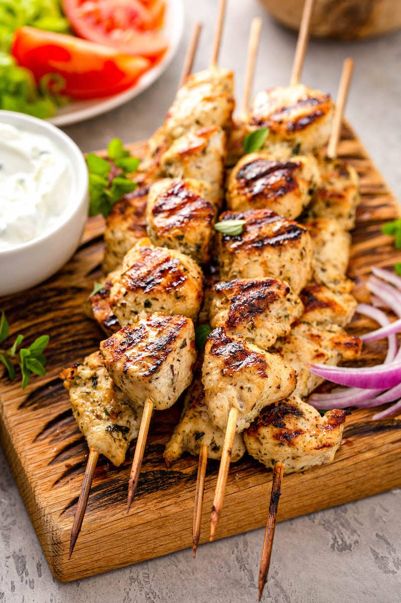
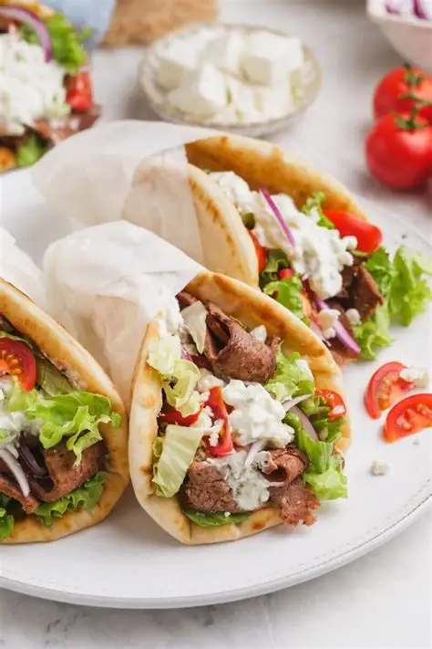

Bilder und Text
Moussaka

Zum Rezept
Moussaka ist ein traditionelles griechisches Auflauf-Gericht aus Auberginen, Hackfleisch und Béchamel-Sauce. Es wird im Ofen gebacken und serviert heiss.
Rezept bei Betty BossiSouvlaki

Zum Rezept
Souvlaki sind gegrillte Fleischspiesse, die mit Oregano, Knoblauch und Olivenöl mariniert werden. Typischerweise werden sie mit Pita-Brot und Tzatziki serviert.
Rezept bei Betty BossiGyros

Zum Rezept
Gyros ist Fleisch, das auf einem vertikalen Drehspiess gegrillt wird. Das Fleisch wird dünn geschnitten und mit Tomaten, Zwiebeln und Tzatziki serviert.
Rezept bei Betty Bossi